Revitalizing a 1957 Beachside Trailer
Restoring a neglected 1957 beachside trailer, I overhauled its structure, utilities, and design—turning a damaged unit into a functional, modern living space.
Project Overview:
In a surf town in California, just a 10-minute walk from the beach, I took on the ambitious project of restoring a dilapidated 1957 trailer with a built-on addition. The unit, measuring 22 feet long by 16 feet wide, presented a series of challenges, including water damage, mold, and infestations, which required a complete overhaul to make it habitable.
Initial State and Demolition:
The initial condition of the trailer was less than ideal, with significant structural and aesthetic issues. The process began with a thorough gutting—removing old cabinets, furniture, drywall, flooring, appliances, and even the electrical and plumbing systems. This left just the steel shell of the trailer and the basic framing of the addition, providing a blank slate for the renovation.
Structural Repairs:
The first step in the restoration was addressing the structural integrity of the unit. I replaced water-damaged framing and termite-infested wood, and restructured the sagging ceiling. The roof was completely redesigned by removing the top side and extending it over the entire unit, supported by robust 2x6 beams, ensuring a leak-proof finish.
Design and Layout Changes:
To enhance the flow and functionality of the space, I relocated the front door to the side of the building and modified the divider wall between the trailer and the addition to create an open, bar-height window. These changes significantly improved the interior layout and connected the spaces more seamlessly.
Insulation and Sealing:
To prevent future rodent infestations, I filled gaps with steel wool and spray foam, creating a tight seal around the unit. I also installed new dual-pane windows and added skylights to bring in natural light and provide ventilation.
Utilities and Interior Finishing:
A new electrical system was installed, including a modern fuse box and wiring for all appliances and lighting. Plumbing was laid out for the kitchen and bathroom facilities, incorporating a propane-powered instant water heater. Walls and ceilings were insulated, drywalled, textured, and painted to give a fresh and inviting look.
Custom Features and Finishes:
Horse Trough Bathtub & Tile Work:
For the bathroom, I wanted to create something unique yet functional, so I designed and built a custom bathtub using a galvanized steel horse trough. This unconventional choice not only added character but also provided a deep soaking tub within the compact space.
To integrate it seamlessly, I constructed a fully insulated tiled enclosure around the trough, ensuring durability and heat retention. The walls and surrounding surfaces were finished with hand-selected tiles, including locally sourced artistic pieces that added a personalized touch. The waterproofing process was carefully executed using a high-quality membrane before applying the mortar and tiles.
The final result was a visually striking yet highly functional bathtub that blended industrial and rustic aesthetics with modern comfort. The combination of the deep soaking tub, custom tiling, and warm wood accents turned this small bathroom into a standout feature of the renovation.
Kitchen Cabinets:
I built custom kitchen cabinets and installed a large butcher block countertop with an undermount sink, finished with natural oil. The bathroom features a unique bathtub crafted from a horse trough, encased in a tiled, insulated box, complemented by artistic local tiles. The flooring throughout was done with waterproof vinyl, and a Murphy bed was built to maximize space.
Exterior and Landscaping:
The exterior of the trailer received a fresh coat of paint, and the surrounding yard was enhanced with a new fence, pavers, flagstone, and river rocks, creating an appealing and welcoming outdoor area.
Project Conclusion:
The restoration transformed the once run-down trailer into a stunning and functional living space. The project not only allowed me to utilize and expand my construction skills but also resulted in a profitable sale that funded my next property investment. This project stands as a testament to the potential hidden in neglected spaces, revealing how vision, skill, and effort can dramatically turn a place around.

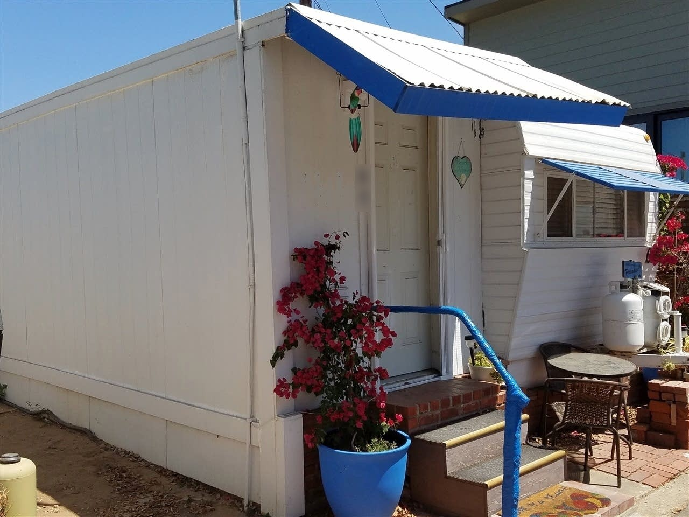
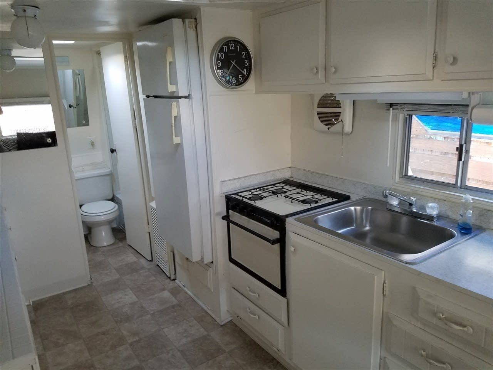
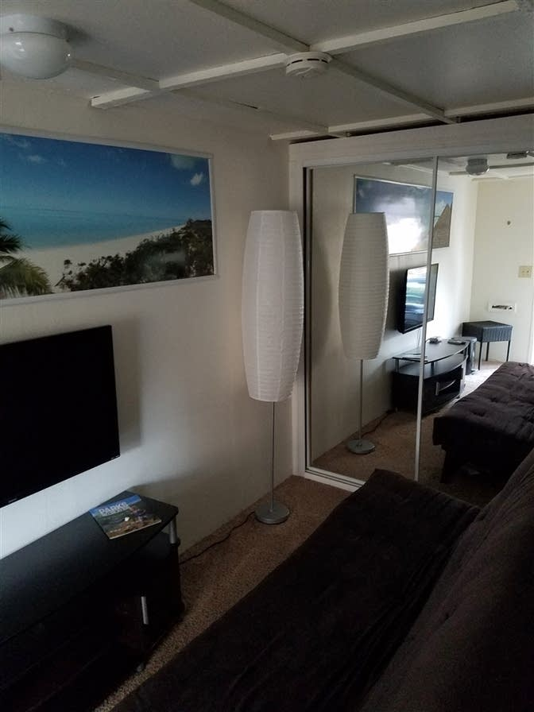
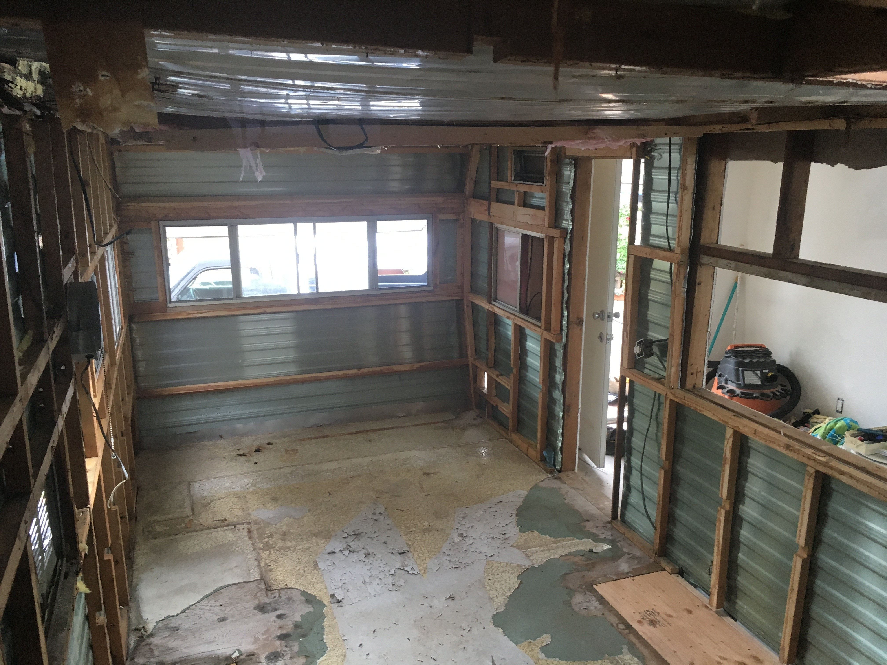
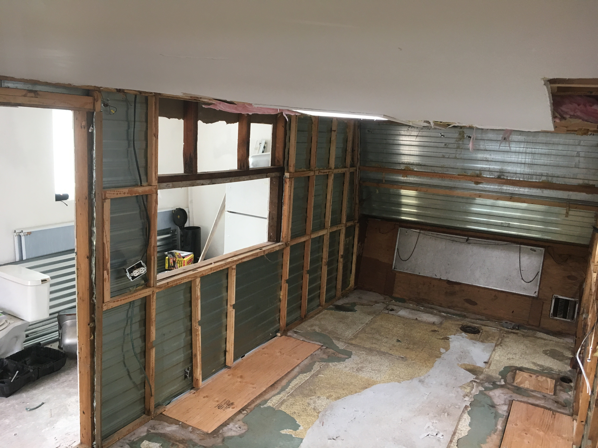
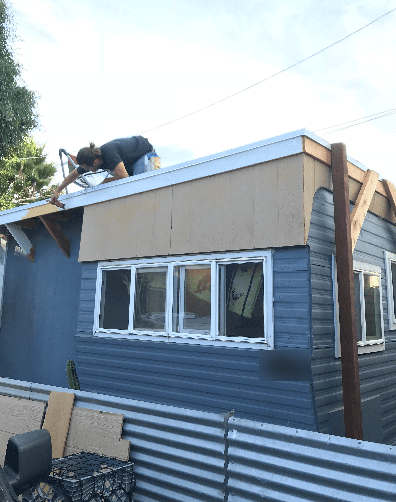
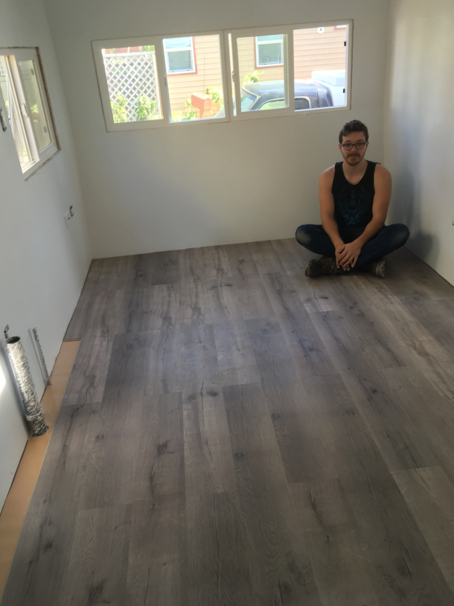
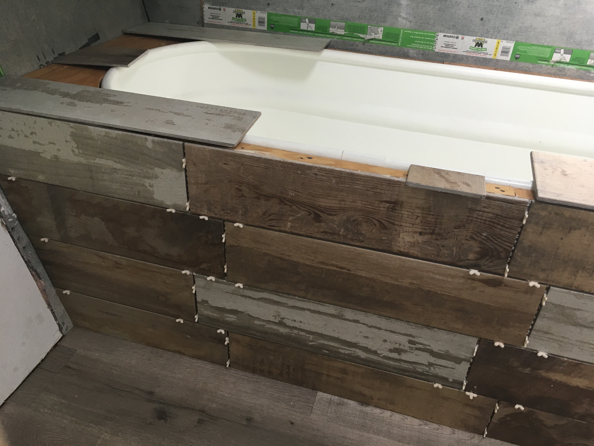
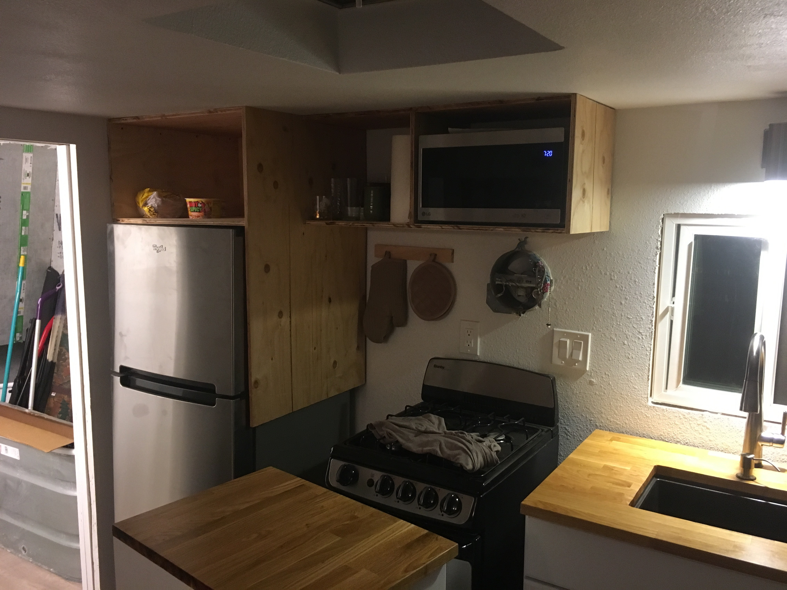
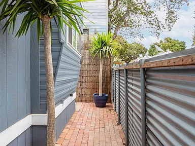
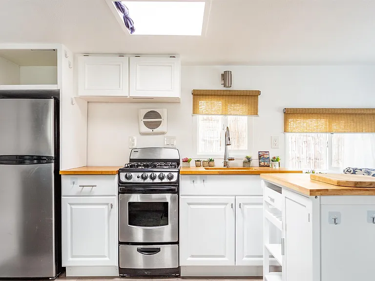
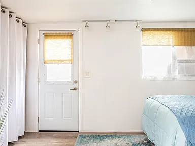
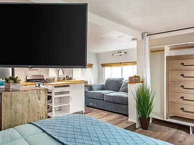
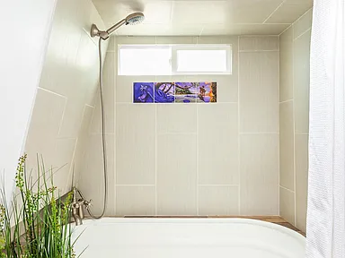